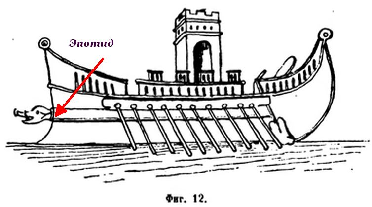
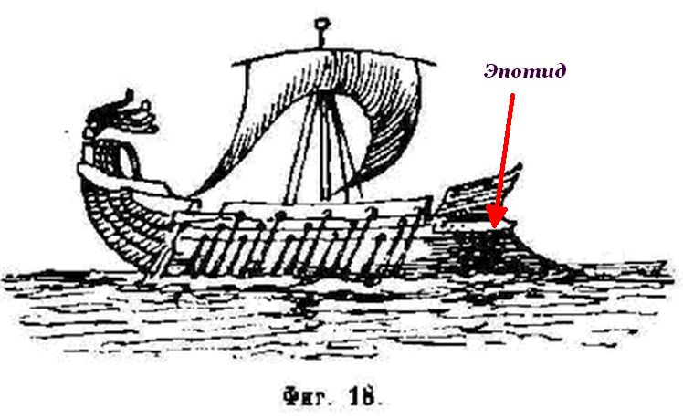
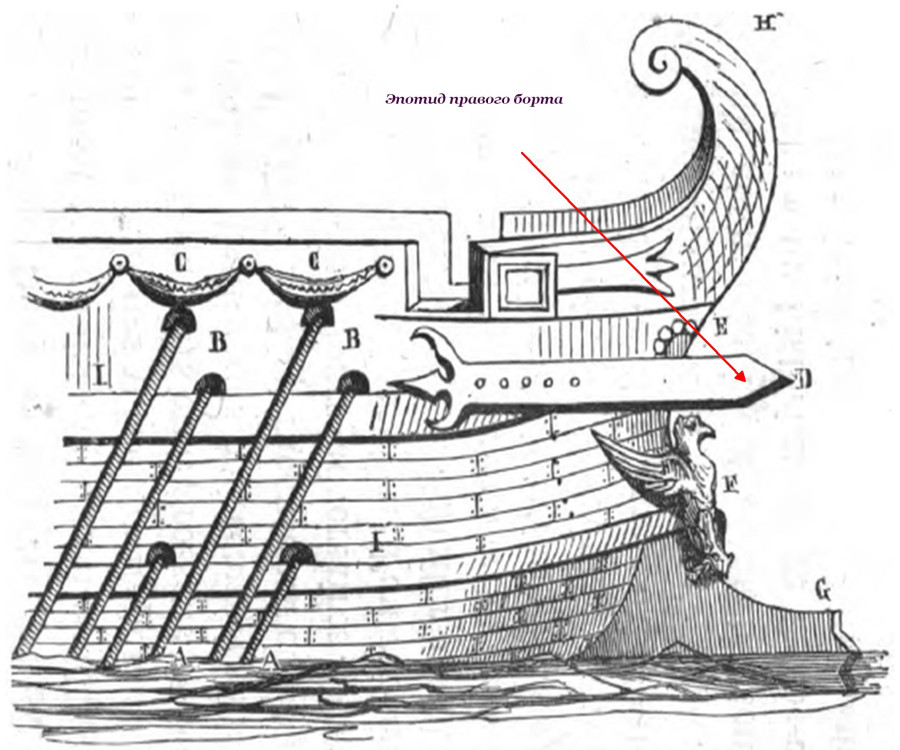
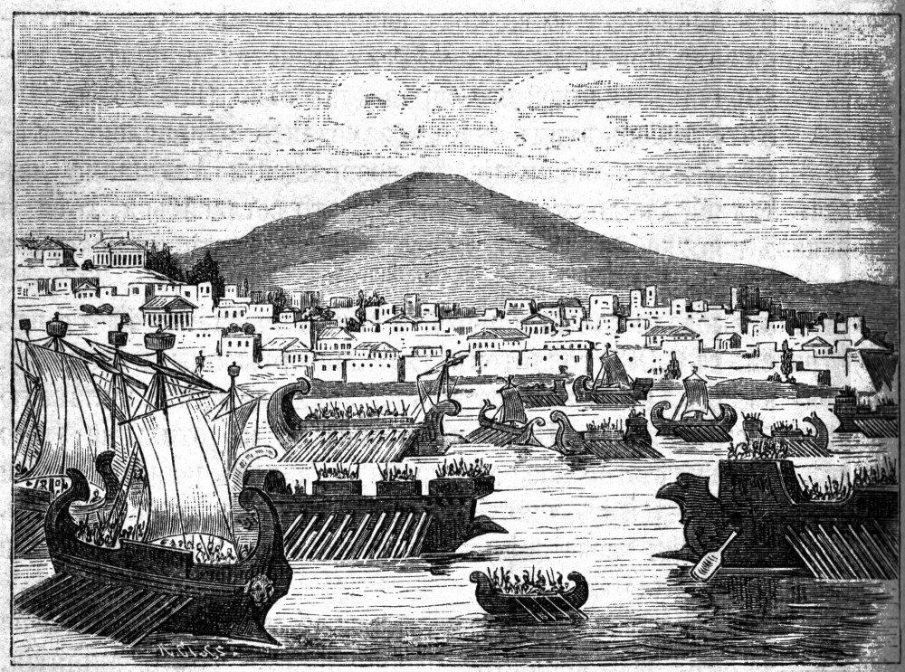
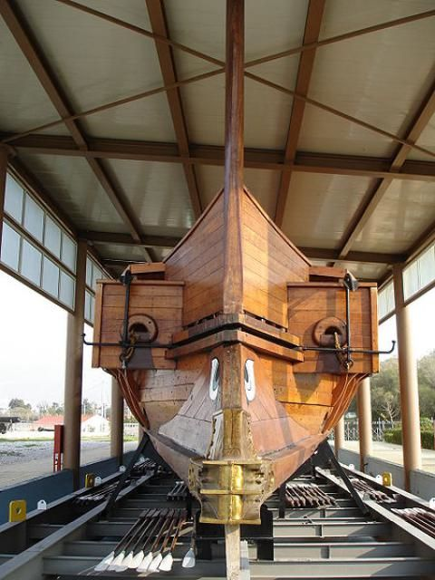
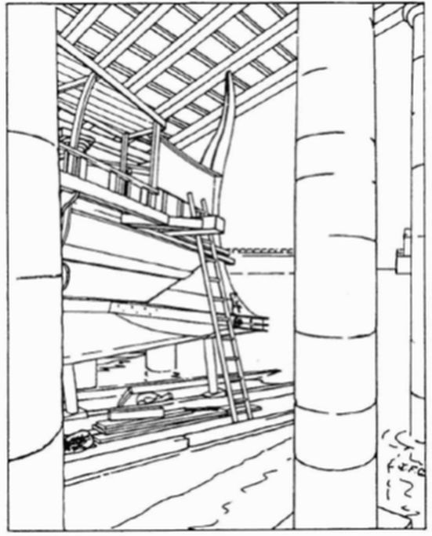
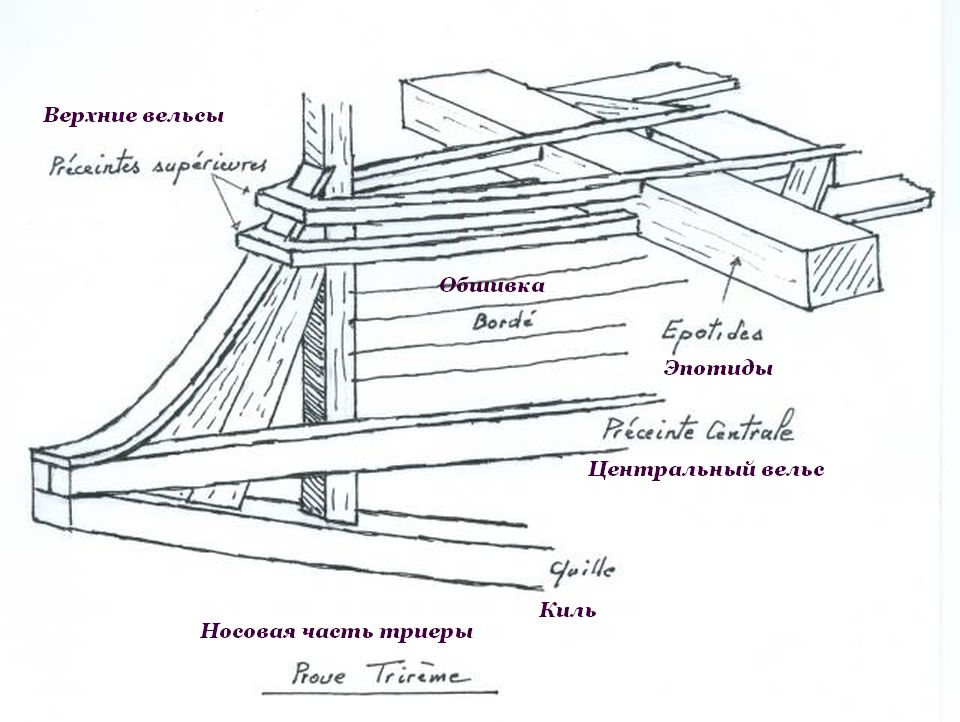
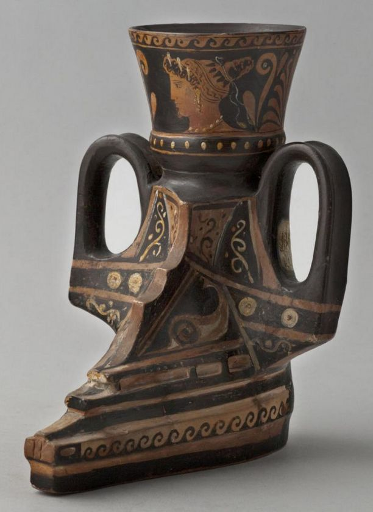
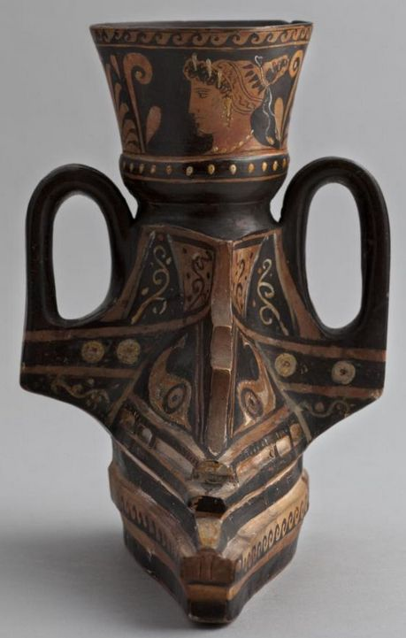
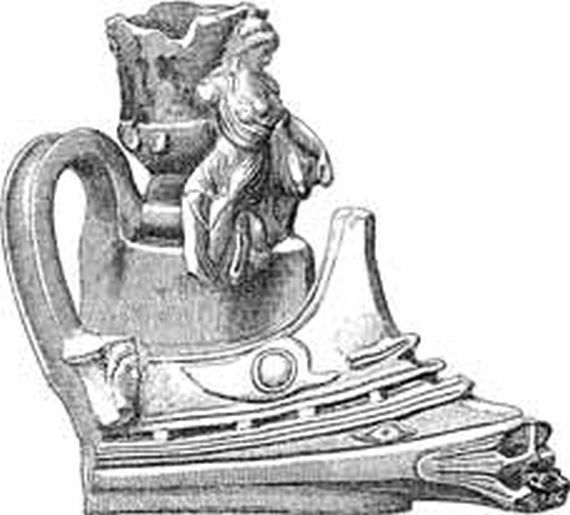

Прежде чем перейти к коллекционеру военных хитростей Полиэну, который также внес свой вклад в запутывание вопроса о рассадке гребцов на триере, обсудим один из конструктивных элементов античных кораблей, о котором мало что сказано в нашей литературе. Обсудим эпотиды.
Ранее мы достаточно подробно осветили роль открытия Эрнста Ассманна, который установил, что упоминавшаяся у древних авторов παρεξειρεσία [parexeiresia] – это некое подобие последующей постицы, или аутригера, гребных кораблей, которое сам Ассманн назвал «весельным ящиком». Изобретение этого устройства относят к 750 г. до н.э.; оно стало прелюдией к появлению кораблей с двумя рядами весел – бирем.
В том же рассказе мы отметили влияние появления этого элемента конструкции гребных кораблей античности на размещение гребцов. Однако имелся один дефект «весельного ящика» - его недостаточная устойчивость к ударам кораблей противника, которые могли «одним махом» смести конструкцию, лишив, в случае триеры, корабль не только верхнего ряда гребцов, но и парализовав все движение судна, так как считалось, что оставшиеся гребцы, которые в гребле ориентировались полностью на верхний ряд, лишались такого ориентира. И, как гласит историческая традиция, тогда и были изобретены эпотиды, призванные защитить «весельный ящик» от губительных атак вражеских кораблей. Вот как описывает Н.П.Боголюбов в «Истории корабля» этот элемент:
Эпотиды, ἐπωτί[δε]ς – так назывались здоровые граненые брусья, прочно прикрепленные к судовым бортам с двух сторон и выдававшиеся за форштевень. Назначение их было предоxранять носовую часть судна от удара в корпус неприятеля в том случае, если бы при ударе таран сломался или свернулся. На ф. 18, изображающей трирему, помещена эпотида несколько выдающаяся за форштевень, на ф. 12 она изображена еще яснее.
Надо полагать, что внешние концы этого предохранительного снаряда были окованы железом и не составляли непременной принадлежности всех военных судов. У Римлян даже не было им особого названия, а Греки сделали их сравнение с ушами (ἐπί οὔς) торчащими вперед. Эпотиды помещались под глазами (см. украшения). Многие другие историки упоминают о вооружении судов эпотидами; между прочими Фукидит (кн. VI) пишет, что Сиракузяне, желая придать сколь возможно более боевой силы своим кораблям, скрепляли носовые их части внутренними брусьями, связывая их с эпотидами болтами.
ТН.Боголюбов История корабля, Том I (1879)
Рисунки в книге Боголюбова, не которые ссылается автор, недостаточно наглядны.


Более ясно эпотиды изображены на иллюстрации из книги О.Жаля «Флот Цезаря» (La flotte de Cesar; Etudes sur la Marine Antique, 1861)

Однако не все так однозначно, и Огюстен Жаль, автор известного морского словаря, к авторитету которого мы уже неоднократно обращались, в статье ἘΠΩΤΊΣ (Эпотис) пишет:
Partie du navire dont les critiques n'ont pu déterminer précisément encore ni le lieu ni l'usage, ni la forme.
Часть корабля, для которого критики не могут с точностью определить ни размещение, ни использование, ни форму.
При этом он ссылается на трактат Лазаря де Байифа «Морское дело …» (De re navali. Paris, 1536.), для которого эпотиды также «non satis dispicio» (недостаточно понятны), и он не может о них сказать ничего, кроме того, что они расположены «по обе стороны носовой части корабля» («utrinque stat ad latus rostri.»)
О.Жаль так и не смог до конца разобраться, что же на самом деле представляют собой эпотиды и предположил, что
Probablement c'étaient de fortes planches clouées, de distance en distance, sur les bordages extérieurs du navire, et principalement vers la proue où les heurts des abordages se faisaient ressentir dans le combat.
Возможно, это были прочные доски, прикрепленные нагелями, на определенном расстоянии один от другого, к внешней обшивке, в основном, в носовой части, где наиболее ощутим абордажный удар в бою.
Один из вариантов истории появления эпотид гласит, что первоначально у бирем появились тараны в форме головы вепря с торчащими в стороны ушами. Эволюция этих ушей привела к возникновению эпотид, название которых (ἐπί οὔς, ἐπ-ωτίδες) и обозначает: торчащие как уши.
Постепенно эпотиды приспособили для подвешивания якоря и в дальнейшем они стали известны как крамболы, кат-балки или, в английском языке, catheads. Этап превращения эпотид на пентеконтерах в кат-балки отмечен в трагедии Еврипида Ифигения в Тавриде.
Коротко сюжет трагедии. У царя Агамемнона, предводителя греков в Троянской войне, и его жены Клитемнестры было трое детей: старшая дочь Ифигения, средняя Электра и младший сын Орест. Когда греки отправлялись в поход на Трою, богиня Артемида потребовала, чтобы Агамемнон принёс ей в жертву Ифигению. Агамемнон исполнил просьбу богини, но в последнее мгновение Артемида сжалилась над жертвой, подменила девушку на алтаре ланью, а Ифигению унесла на облаке в Тавриду. Там, в храме Артемиды, хранилось деревянное изваяние богини, по преданию упавшее с небес. При этом храме Ифигения стала жрицей. Всех чужеземцев, каких занесёт в Тавриду море, в храме приносят в жертву Артемиде, и Ифигения, должна готовить их к смерти.
Из людей никто не знал, что Ифигения спаслась: все думали, что она погибла. Мать ее Клитемнестра возненавидела своего мужа-детоубийцу. И когда Агамемнон вернулся с Троянской войны, она, мстя за дочь, убила его. После этого сын ее Орест с помощью своей сестры Электры, мстя уже за отца, убил родную мать. Чтобы искупить вину, Орест должен был совершить подвиг: добыть в Тавриде изваяние Артемиды и привезти его в афинскую землю. Помощником Оресту вызвался быть его друг Пилад, женившийся на его сестре Электре. В Тавриде Орест и Пилад попадают в плен и, назначенные к жертвоприношению Артемиде, встречаются с Ифигенией, которая помогает им бежать. Описание подготовки корабля Ореста к побегу и есть та часть трагедии, которая нас интересует.
Как обычно, перевод трагедии на русский (Иннокентия Анненского) нам не сообщает никаких деталей, которые мы пытаемся найти. Вот как описывают побег свидетели по версии Анненского:
И что же мы увидели? Сперва
Лишь корабля аргосского контуры,
Потом гребцов... и с веслами в руках
Их пятьдесят там было... - под конец же
Их, пленников, но только без оков.
В движении все было там: причальный
Те на корме канат слагали, те
Тянули вверх из моря якорь, - сходни
Для юношей спускали там поспешно.
Еврипид. Трагедии. В 2 томах. Т. 1."Литературные памятники", М., 1999
В подлиннике мы имеем
κἀνταῦθ᾽ ὁρῶμεν Ἑλλάδος νεὼς σκάφος
ταρσῷ κατήρει πίτυλον ἐπτερωμένον,
ναύτας τε πεντήκοντ᾽ ἐπὶ σκαλμῶν πλάτας
ἔχοντας, ἐκ δεσμῶν δὲ τοὺς νεανίας
ἐλευθέρους πρύμνηθεν ἑστῶτας νεώς
κοντοῖς δὲ πρῷραν εἶχον, οἳ δ᾽ ἐπωτίδων
ἄγκυραν ἐξανῆπτον: οἳ δέ, κλίμακας
σπεύδοντες, ἦγον διὰ χερῶν πρυμνήσια,
πόντῳ δὲ δόντες τοῖν ξένοιν καθίεσαν
Euripides, IT 1350-51
Корявый подстрочник этого отрывка:
Мы увидели корпус греческого корабля, окрыленный готовыми к гребле веслами пентеконтер, гребцы которого вставили свои весла в уключины; двое юношей, освобожденные от оков, стояли у кормы. Некоторые удерживали нос корабля с помощью шестов, другие подвешивали якоря на эпотиды, некоторые же тянули кормовые швартовые концы и спешно спускали трапы для пленников.
Здесь впервые упоминаются эпотиды как устройство для подвески якорей. Но практически одновременно у Фукидида мы встречаем описание боевого применения эпотид. И если у Боголюбова внимание заострено на оборонительном, предохранительном назначении эпотид, «предоxранять носовую часть [своего] судна от удара в корпус» со стороны корпуса вражеского судна, если таран окажется неудачным, то у Фукидида эпотиды играют уже роль наступательного оружия.
Трагедия Еврипида написана в 414 году до н. э., а на следующий год в Коринфском заливе произошел морской бой у Навпакта между эскадрами Афин и Коринфа. Так вот, в описании этого боестолкновения у Фукидида впервые отмечается роль эпотид, наряду с тараном, как наступательного оружия.
Афиняне на 33 кораблях под командой Дифила вышли против них из Навпакта. (4) Коринфяне же сперва не трогались с места, а когда, по их мнению, настало время, они по сигналу двинулись на афинян и начали битву. (5) Долго противники не уступали друг другу. Три коринфских корабля было уничтожено; у афинян, хотя ни один корабль не был совершенно затоплен, однако семь кораблей вышли из строя, получив в носовой части пробоины от ударов коринфских кораблей (именно для этой цели якорные брусья-тараны коринфских кораблей были сделаны более массивными).
Thucydides 7.34.3-5, пер. Стратановского
Перевод этого отрывка у Мищенко я даже первоначально не хотел приводить по причине, указанной ранее: он совершенно неправильно толковал смысл термина παρεξειρεσία [parexeiresia], с чем мы уже рабирались раньше, когда рассматривали работу переводчика М.В. Левченко. Разве уж шоб було (с)
(5) В битве коринфяне потеряли три корабля; из афинских не был окончательно затоплен ни один, но около семи кораблей выбыли из строя, потому что неприятель ударил в них спереди, и коринфские корабли расшибли их в тех частях, которые не имеют весел (для этой цели коринфские корабли снабжены были более толстыми брусьями).
Thucydides 7.34.5, пер. Мищенко
Впрочем, перевод сложится, если вместо слов «в тех частях, которые не имеют весел» поставить «весельный ящик», а «более толстые брусья» не постесняться назвать эпотидами. Мне вообще непонятно, почему наши переводчики стесняются давать на русском языке названия тем понятиям, которые несут вполне определенные названия на языке оригинала. Нет, лучше с помощью описательных средства языка раз от разу повторять то, что может быть единожды и навсегда названо одним словом. Тем более, что оно, это слово, уже введено в оборот, как нам показывает пример описания у Боголюбова.
Для справки приведем оригинал этой части:
[5] καὶ τῶν μὲν Κορινθίων τρεῖς νῆες διαφθείρονται, τῶν δ᾽ Ἀθηναίων κατέδυ μὲν οὐδεμία ἁπλῶς, ἑπτὰ δέ τινες ἄπλοι ἐγένοντο ἀντίπρῳροι ἐμβαλλόμεναι καὶ ἀναρραγεῖσαι τὰς παρεξειρεσίας ὑπὸ τῶν Κορινθίων νεῶν ἐπ᾽ αὐτὸ τοῦτο παχυτέρας τὰς ἐπωτίδας ἐχουσῶν.
Итак, нет никакого сомнения, что в боевом столкновении с афинянами у Навпакта весной 413 г. до н. э. корабли коринфского флота имели эпотиды, расположенные на уровне весельного ящика афинских кораблей, которые использовались вместе с тараном и предназначались для уничтожения постицы вместе с верхним рядом весел у кораблей противника.
Опыт сражения при Навпакте ничему не научил афинских кораблестроителей. Они вновь попались на ту же удочку в боевых действиях в заключительной части Сицилийской экспедиции, на этот раз против сиракузских кораблей.
Штенцель, в своей «Истории войн на море» так рассказывает о новой тактике коринфян в боевых действиях против афинского флота:
В этой битве впервые проявило свое действие изобретенное коринфянами нововведение в кораблестроении. В то время как триремы были вообще насколько можно легкой постройки, коринфяне укрепили нос и установили там далеко выдающийся вперед с сильными креплениями упорные балки вроде имевшихся на парусных судах кат– и фиш-балок, но только установленных по диаметральной плоскости триремы. Назначением этих балок было не дать тарану неприятельского судна коснуться своего носа и в то же время врезаться в нос неприятеля. В этом бою афинянам, применявшим тактику тарана, удалось пустить ко дну только 3 триремы коринфян, тогда как последние, хотя и не уничтожили ни одного неприятельского судна, нанесли семи афинским триремам – и большей частью помощью ударных балок – настолько сильные повреждения, что сделали их совершенно небоеспособными.
А далее тот же Штенцель повествует, как опыт корнифян использовали моряки Сиракуз.
По совету коринфянина Аристона, они снабдили свои триремы описанными выше упорными балками и сделали тараны короче и крепче. В бухте шириной всего 1900 метров лобовая атака имела тем большие преимущества, что здесь нельзя было так маневрировать, как на широком пространстве открытого моря, где есть место для разворота и разбега, и где Формион, правильно маневрируя, стяжал себе славу. Здесь афиняне были вынуждены сражаться в тесноте, и тут-то выступила их собственная слабость и сила их врага.

Битва за Сиракузы в 413 г. до н.э. была первой, в которой афиняне были не только побеждены, но и совершенно разбиты более слабым по численности врагом. Она была определяющим поворотным пунктом в Пелопоннесской войне и вместе с тем началом заката афинского морского могущества, равно как и величия самих Афин.
Казалось бы, с вопросом об эпотидах античных кораблей мы разобрались и можно идти дальше. Но не будем торопиться. У меня остается чувство неудовлетворенности от написаннаго выше. С одной стороны, эпотиды якобы расположены параллельно диаметральной плосткости корабля, т.е. параллельно тарану. Но с другой, посмотрим на реконструкцию афинской триеры «Олимпиа». Там эпотиды – это брусья, выступающие перпендикулярно диаметральной плоскости, и находящиеся практически в одной плоскости с носовой частью весельного ящика. Практически так же, как располагаются крамболы парусных кораблей

Еще отчетливей это видно на рисунке (Coates), на котором Олимпиа изображена со снятой обшивкой весельного ящика и с кормового угла зрения.

Реконструкция носовой части триеры показывает место эпотид среди других носовых конструкций:

Аналогично расположение эпотид на роге для питья, ритоне, из музея Petit Palais (musée des Beaux-arts de la Ville de Paris), исполненного в виде носовой части корабля.

Эпотиды в этом случае расположены под ручками сосуда, к кораблю, конечно, отношения не имеющими.

Или на другом ритоне, на этот раз из Британского музея

Здесь эпотиды – массивные конструкции в поперечной плоскости корабля, украшенные изображением лица богини, сразу за стилизованным изображением глаза.
Приведенных нами цитат из классических авторов явно недостаточно, чтобы судить о том, какому из вариантов размещения эпотид отдать предпочтение.
В следующий раз попробуем разобраться с обещанными тактическими приемами, использующмими эпотиды, которые описаны у Полиэна, и на их основе оценим гипотезы различных авторов. Хотя уже сейчас создается впечатление, что и в этом случае истину об эпотидах в последней инстанции мы вряд ли сможем найти.